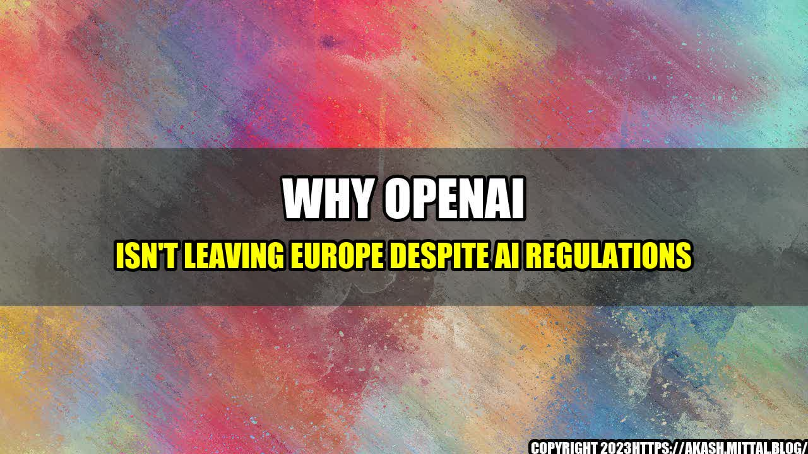

Why OpenAI Isn't Leaving Europe Despite AI Regulations

OpenAI, the artificial intelligence research organization co-founded by Tesla's Elon Musk, has recently been in the news for its decision to move its European headquarters from London to Brussels. Some have speculated that this could be due to concerns over new AI regulations being introduced by the European Union.
However, in an interview with Bloomberg, OpenAI's CEO Sam Altman downplayed these fears, stating that the move was simply to be closer to European policymakers and that the company fully supports the EU's efforts to regulate AI.
"We think that a well-thought-out set of AI regulations could be really positive for Europe and for the world as a whole," Altman said. "We want to be part of those discussions and help shape the future of AI in Europe."
So, why exactly is OpenAI so supportive of AI regulations, and why aren't they afraid to stay in Europe despite the potential costs and restrictions?
One of the main reasons that OpenAI supports AI regulations is the potential for these regulations to help prevent the misuse or abuse of AI technology.
Altman explained that there are many potential risks associated with AI, from job displacement to loss of privacy to unintended consequences. By establishing regulations and guidelines for AI development, we can work to mitigate these risks and ensure that AI is used for good.
Furthermore, Altman argues that responsible AI development is not just a moral imperative but a business one as well. Companies that are seen as ethical and trustworthy are more likely to attract customers, investors, and top talent. By working to establish responsible AI regulations, OpenAI hopes to help build public trust in AI and promote the responsible development and use of this technology.
While it can be difficult to quantify the benefits of responsible AI development and regulation, there are several examples of the potential risks of unchecked AI development.
By establishing responsible AI regulations, we can work to mitigate these risks and ensure that the benefits of AI are shared by all.
Despite concerns over new AI regulations, OpenAI is committed to staying in Europe and contributing to the development of responsible AI. There are several reasons for this:
If you're working in AI development, there are several practical steps you can take to promote responsible AI:
Despite fears of new AI regulations, OpenAI is committed to staying in Europe and contributing to the development of responsible AI. By establishing regulations and guidelines for AI development, we can work to mitigate the risks of job displacement, loss of privacy, and unintended consequences. Practical steps such as transparency, stakeholder involvement, and risk assessment can help promote responsible AI development.
Curated by Team Akash.Mittal.Blog
Share on Twitter Share on LinkedIn